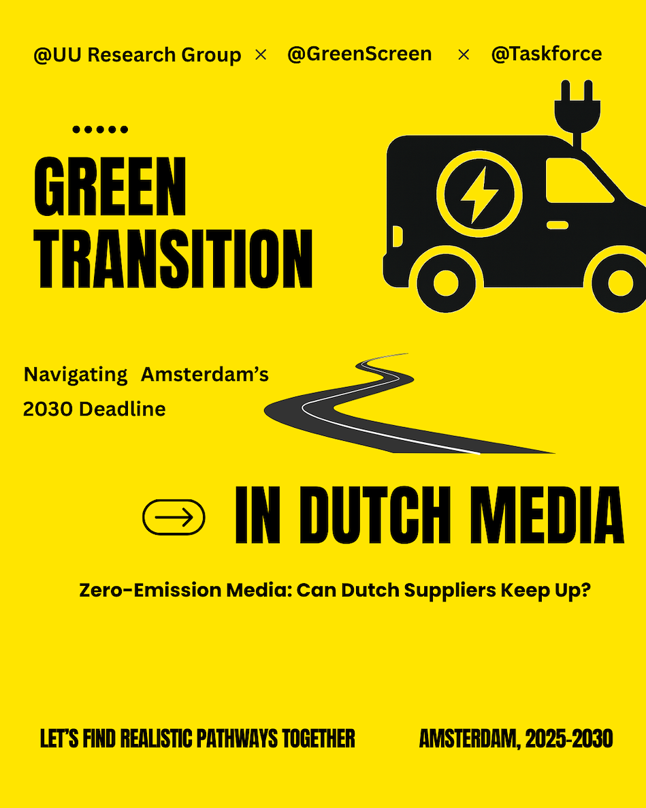
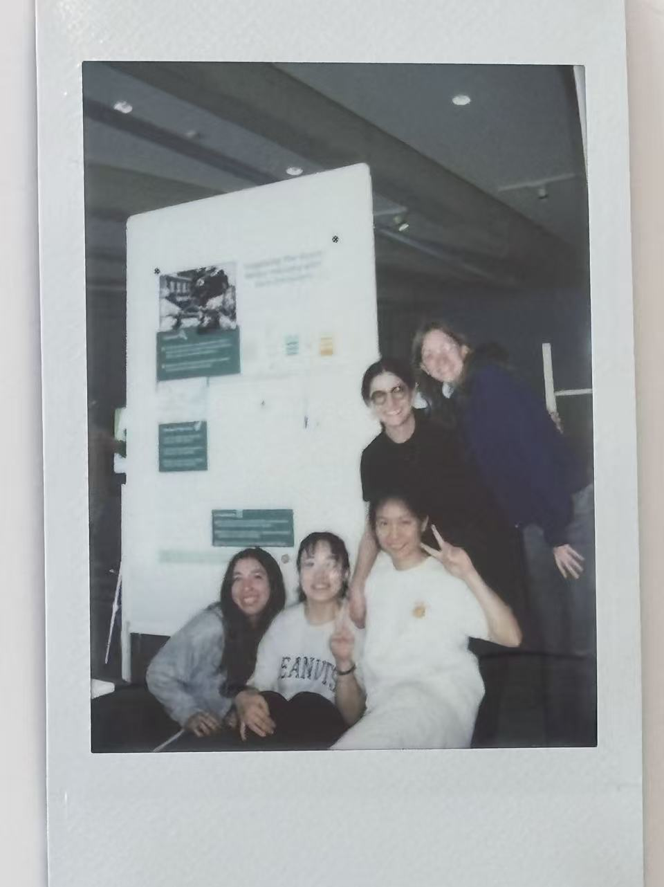

Quantitative modelling & data processing · Mar 2025 – Jul 2025 · team of 6
Nine Dutch film suppliers reported 92 vehicles that together travelled about 1.2 million kilometres a year. An estimated 6.5% of that mileage was inside zero-emission zones. For suppliers moving cameras, lights and other equipment between shoots, the question was when to replace each vehicle while keeping the fleet working.
The model compared switching the whole fleet by 2030 with going electric as each vehicle came up for replacement, finishing by 2035. The phased approach cut emissions more gradually and had similar or lower annual costs under the model’s assumptions. By 2035, both paths reached the same projected emissions level.
Two timelines for going electric
Annual fleet emissions · BAU: replace like for like. ZE: go electric by 2030. PC: phase in electric vehicles by 2035.Annual fleet costs, including fuel and electricity. The phased scenario assumes a longer transition window. The cost model excludes subsidies, insurance and charger installation.

Project graphic for GreenScreen and BFF

Project team
How
The team worked with GreenScreen and BFF to study how Dutch film suppliers could adapt their fleets to Amsterdam’s zero-emission zone. Manchen’s part was behind the model: cleaning and structuring the supplier survey data, building the vehicle-by-vehicle Excel calculations, and handing over a model the project partners could update themselves.
The zone mileage estimate used records from the 60 vehicles with reported in-zone distances. The model tracked tailpipe emissions, emissions from charging, vehicle purchases and resale values, maintenance, and fuel or electricity.
Excel · fleet emissions and cost modelling · survey data cleaning